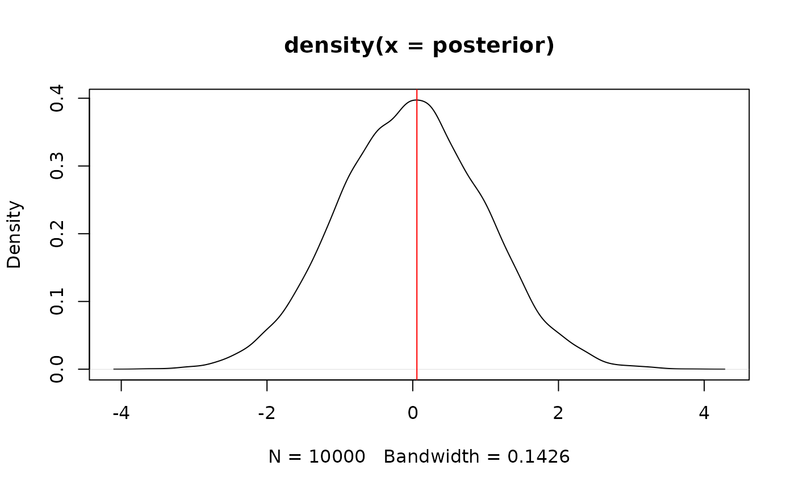

Find the Highest Maximum A Posteriori probability estimate (MAP) of a
posterior, i.e., the value associated with the highest probability density
(the "peak" of the posterior distribution). In other words, it is an estimation
of the mode for continuous parameters. Note that this function relies on
estimate_density(), which by default uses a different smoothing bandwidth
("SJ") compared to the legacy default implemented the base R density()
function ("nrd0").
Usage
map_estimate(x, ...)
# S3 method for class 'numeric'
map_estimate(x, precision = 2^10, method = "kernel", ...)
# S3 method for class 'stanreg'
map_estimate(
x,
precision = 2^10,
method = "kernel",
effects = c("fixed", "random", "all"),
component = c("location", "all", "conditional", "smooth_terms", "sigma",
"distributional", "auxiliary"),
parameters = NULL,
...
)
# S3 method for class 'brmsfit'
map_estimate(
x,
precision = 2^10,
method = "kernel",
effects = c("fixed", "random", "all"),
component = c("conditional", "zi", "zero_inflated", "all"),
parameters = NULL,
...
)
# S3 method for class 'data.frame'
map_estimate(x, precision = 2^10, method = "kernel", rvar_col = NULL, ...)
# S3 method for class 'get_predicted'
map_estimate(
x,
precision = 2^10,
method = "kernel",
use_iterations = FALSE,
verbose = TRUE,
...
)Arguments
- x
Vector representing a posterior distribution, or a data frame of such vectors. Can also be a Bayesian model. bayestestR supports a wide range of models (see, for example,
methods("hdi")) and not all of those are documented in the 'Usage' section, because methods for other classes mostly resemble the arguments of the.numericor.data.framemethods.- ...
Currently not used.
- precision
Number of points of density data. See the
nparameter indensity.- method
Density estimation method. Can be
"kernel"(default),"logspline"or"KernSmooth".- effects
Should results for fixed effects, random effects or both be returned? Only applies to mixed models. May be abbreviated.
- component
Should results for all parameters, parameters for the conditional model or the zero-inflated part of the model be returned? May be abbreviated. Only applies to brms-models.
- parameters
Regular expression pattern that describes the parameters that should be returned. Meta-parameters (like
lp__orprior_) are filtered by default, so only parameters that typically appear in thesummary()are returned. Useparametersto select specific parameters for the output.- rvar_col
A single character - the name of an
rvarcolumn in the data frame to be processed. See example inp_direction().- use_iterations
Logical, if
TRUEandxis aget_predictedobject, (returned byinsight::get_predicted()), the function is applied to the iterations instead of the predictions. This only applies to models that return iterations for predicted values (e.g.,brmsfitmodels).- verbose
Toggle off warnings.
Value
A numeric value if x is a vector. If x is a model-object,
returns a data frame with following columns:
Parameter: The model parameter(s), ifxis a model-object. Ifxis a vector, this column is missing.MAP_Estimate: The MAP estimate for the posterior or each model parameter.
Examples
# \donttest{
library(bayestestR)
posterior <- rnorm(10000)
map_estimate(posterior)
#> MAP Estimate
#>
#> Parameter | MAP_Estimate
#> ------------------------
#> x | 0.06
plot(density(posterior))
abline(v = as.numeric(map_estimate(posterior)), col = "red")

model <- rstanarm::stan_glm(mpg ~ wt + cyl, data = mtcars)
#>
#> SAMPLING FOR MODEL 'continuous' NOW (CHAIN 1).
#> Chain 1:
#> Chain 1: Gradient evaluation took 2.1e-05 seconds
#> Chain 1: 1000 transitions using 10 leapfrog steps per transition would take 0.21 seconds.
#> Chain 1: Adjust your expectations accordingly!
#> Chain 1:
#> Chain 1:
#> Chain 1: Iteration: 1 / 2000 [ 0%] (Warmup)
#> Chain 1: Iteration: 200 / 2000 [ 10%] (Warmup)
#> Chain 1: Iteration: 400 / 2000 [ 20%] (Warmup)
#> Chain 1: Iteration: 600 / 2000 [ 30%] (Warmup)
#> Chain 1: Iteration: 800 / 2000 [ 40%] (Warmup)
#> Chain 1: Iteration: 1000 / 2000 [ 50%] (Warmup)
#> Chain 1: Iteration: 1001 / 2000 [ 50%] (Sampling)
#> Chain 1: Iteration: 1200 / 2000 [ 60%] (Sampling)
#> Chain 1: Iteration: 1400 / 2000 [ 70%] (Sampling)
#> Chain 1: Iteration: 1600 / 2000 [ 80%] (Sampling)
#> Chain 1: Iteration: 1800 / 2000 [ 90%] (Sampling)
#> Chain 1: Iteration: 2000 / 2000 [100%] (Sampling)
#> Chain 1:
#> Chain 1: Elapsed Time: 0.042 seconds (Warm-up)
#> Chain 1: 0.041 seconds (Sampling)
#> Chain 1: 0.083 seconds (Total)
#> Chain 1:
#>
#> SAMPLING FOR MODEL 'continuous' NOW (CHAIN 2).
#> Chain 2:
#> Chain 2: Gradient evaluation took 1.1e-05 seconds
#> Chain 2: 1000 transitions using 10 leapfrog steps per transition would take 0.11 seconds.
#> Chain 2: Adjust your expectations accordingly!
#> Chain 2:
#> Chain 2:
#> Chain 2: Iteration: 1 / 2000 [ 0%] (Warmup)
#> Chain 2: Iteration: 200 / 2000 [ 10%] (Warmup)
#> Chain 2: Iteration: 400 / 2000 [ 20%] (Warmup)
#> Chain 2: Iteration: 600 / 2000 [ 30%] (Warmup)
#> Chain 2: Iteration: 800 / 2000 [ 40%] (Warmup)
#> Chain 2: Iteration: 1000 / 2000 [ 50%] (Warmup)
#> Chain 2: Iteration: 1001 / 2000 [ 50%] (Sampling)
#> Chain 2: Iteration: 1200 / 2000 [ 60%] (Sampling)
#> Chain 2: Iteration: 1400 / 2000 [ 70%] (Sampling)
#> Chain 2: Iteration: 1600 / 2000 [ 80%] (Sampling)
#> Chain 2: Iteration: 1800 / 2000 [ 90%] (Sampling)
#> Chain 2: Iteration: 2000 / 2000 [100%] (Sampling)
#> Chain 2:
#> Chain 2: Elapsed Time: 0.049 seconds (Warm-up)
#> Chain 2: 0.047 seconds (Sampling)
#> Chain 2: 0.096 seconds (Total)
#> Chain 2:
#>
#> SAMPLING FOR MODEL 'continuous' NOW (CHAIN 3).
#> Chain 3:
#> Chain 3: Gradient evaluation took 1.1e-05 seconds
#> Chain 3: 1000 transitions using 10 leapfrog steps per transition would take 0.11 seconds.
#> Chain 3: Adjust your expectations accordingly!
#> Chain 3:
#> Chain 3:
#> Chain 3: Iteration: 1 / 2000 [ 0%] (Warmup)
#> Chain 3: Iteration: 200 / 2000 [ 10%] (Warmup)
#> Chain 3: Iteration: 400 / 2000 [ 20%] (Warmup)
#> Chain 3: Iteration: 600 / 2000 [ 30%] (Warmup)
#> Chain 3: Iteration: 800 / 2000 [ 40%] (Warmup)
#> Chain 3: Iteration: 1000 / 2000 [ 50%] (Warmup)
#> Chain 3: Iteration: 1001 / 2000 [ 50%] (Sampling)
#> Chain 3: Iteration: 1200 / 2000 [ 60%] (Sampling)
#> Chain 3: Iteration: 1400 / 2000 [ 70%] (Sampling)
#> Chain 3: Iteration: 1600 / 2000 [ 80%] (Sampling)
#> Chain 3: Iteration: 1800 / 2000 [ 90%] (Sampling)
#> Chain 3: Iteration: 2000 / 2000 [100%] (Sampling)
#> Chain 3:
#> Chain 3: Elapsed Time: 0.047 seconds (Warm-up)
#> Chain 3: 0.046 seconds (Sampling)
#> Chain 3: 0.093 seconds (Total)
#> Chain 3:
#>
#> SAMPLING FOR MODEL 'continuous' NOW (CHAIN 4).
#> Chain 4:
#> Chain 4: Gradient evaluation took 1.1e-05 seconds
#> Chain 4: 1000 transitions using 10 leapfrog steps per transition would take 0.11 seconds.
#> Chain 4: Adjust your expectations accordingly!
#> Chain 4:
#> Chain 4:
#> Chain 4: Iteration: 1 / 2000 [ 0%] (Warmup)
#> Chain 4: Iteration: 200 / 2000 [ 10%] (Warmup)
#> Chain 4: Iteration: 400 / 2000 [ 20%] (Warmup)
#> Chain 4: Iteration: 600 / 2000 [ 30%] (Warmup)
#> Chain 4: Iteration: 800 / 2000 [ 40%] (Warmup)
#> Chain 4: Iteration: 1000 / 2000 [ 50%] (Warmup)
#> Chain 4: Iteration: 1001 / 2000 [ 50%] (Sampling)
#> Chain 4: Iteration: 1200 / 2000 [ 60%] (Sampling)
#> Chain 4: Iteration: 1400 / 2000 [ 70%] (Sampling)
#> Chain 4: Iteration: 1600 / 2000 [ 80%] (Sampling)
#> Chain 4: Iteration: 1800 / 2000 [ 90%] (Sampling)
#> Chain 4: Iteration: 2000 / 2000 [100%] (Sampling)
#> Chain 4:
#> Chain 4: Elapsed Time: 0.045 seconds (Warm-up)
#> Chain 4: 0.048 seconds (Sampling)
#> Chain 4: 0.093 seconds (Total)
#> Chain 4:
map_estimate(model)
#> MAP Estimate
#>
#> Parameter | MAP_Estimate
#> --------------------------
#> (Intercept) | 39.51
#> wt | -3.24
#> cyl | -1.39
model <- brms::brm(mpg ~ wt + cyl, data = mtcars)
#> Compiling Stan program...
#> Start sampling
#>
#> SAMPLING FOR MODEL 'anon_model' NOW (CHAIN 1).
#> Chain 1:
#> Chain 1: Gradient evaluation took 6e-06 seconds
#> Chain 1: 1000 transitions using 10 leapfrog steps per transition would take 0.06 seconds.
#> Chain 1: Adjust your expectations accordingly!
#> Chain 1:
#> Chain 1:
#> Chain 1: Iteration: 1 / 2000 [ 0%] (Warmup)
#> Chain 1: Iteration: 200 / 2000 [ 10%] (Warmup)
#> Chain 1: Iteration: 400 / 2000 [ 20%] (Warmup)
#> Chain 1: Iteration: 600 / 2000 [ 30%] (Warmup)
#> Chain 1: Iteration: 800 / 2000 [ 40%] (Warmup)
#> Chain 1: Iteration: 1000 / 2000 [ 50%] (Warmup)
#> Chain 1: Iteration: 1001 / 2000 [ 50%] (Sampling)
#> Chain 1: Iteration: 1200 / 2000 [ 60%] (Sampling)
#> Chain 1: Iteration: 1400 / 2000 [ 70%] (Sampling)
#> Chain 1: Iteration: 1600 / 2000 [ 80%] (Sampling)
#> Chain 1: Iteration: 1800 / 2000 [ 90%] (Sampling)
#> Chain 1: Iteration: 2000 / 2000 [100%] (Sampling)
#> Chain 1:
#> Chain 1: Elapsed Time: 0.019 seconds (Warm-up)
#> Chain 1: 0.018 seconds (Sampling)
#> Chain 1: 0.037 seconds (Total)
#> Chain 1:
#>
#> SAMPLING FOR MODEL 'anon_model' NOW (CHAIN 2).
#> Chain 2:
#> Chain 2: Gradient evaluation took 3e-06 seconds
#> Chain 2: 1000 transitions using 10 leapfrog steps per transition would take 0.03 seconds.
#> Chain 2: Adjust your expectations accordingly!
#> Chain 2:
#> Chain 2:
#> Chain 2: Iteration: 1 / 2000 [ 0%] (Warmup)
#> Chain 2: Iteration: 200 / 2000 [ 10%] (Warmup)
#> Chain 2: Iteration: 400 / 2000 [ 20%] (Warmup)
#> Chain 2: Iteration: 600 / 2000 [ 30%] (Warmup)
#> Chain 2: Iteration: 800 / 2000 [ 40%] (Warmup)
#> Chain 2: Iteration: 1000 / 2000 [ 50%] (Warmup)
#> Chain 2: Iteration: 1001 / 2000 [ 50%] (Sampling)
#> Chain 2: Iteration: 1200 / 2000 [ 60%] (Sampling)
#> Chain 2: Iteration: 1400 / 2000 [ 70%] (Sampling)
#> Chain 2: Iteration: 1600 / 2000 [ 80%] (Sampling)
#> Chain 2: Iteration: 1800 / 2000 [ 90%] (Sampling)
#> Chain 2: Iteration: 2000 / 2000 [100%] (Sampling)
#> Chain 2:
#> Chain 2: Elapsed Time: 0.02 seconds (Warm-up)
#> Chain 2: 0.018 seconds (Sampling)
#> Chain 2: 0.038 seconds (Total)
#> Chain 2:
#>
#> SAMPLING FOR MODEL 'anon_model' NOW (CHAIN 3).
#> Chain 3:
#> Chain 3: Gradient evaluation took 3e-06 seconds
#> Chain 3: 1000 transitions using 10 leapfrog steps per transition would take 0.03 seconds.
#> Chain 3: Adjust your expectations accordingly!
#> Chain 3:
#> Chain 3:
#> Chain 3: Iteration: 1 / 2000 [ 0%] (Warmup)
#> Chain 3: Iteration: 200 / 2000 [ 10%] (Warmup)
#> Chain 3: Iteration: 400 / 2000 [ 20%] (Warmup)
#> Chain 3: Iteration: 600 / 2000 [ 30%] (Warmup)
#> Chain 3: Iteration: 800 / 2000 [ 40%] (Warmup)
#> Chain 3: Iteration: 1000 / 2000 [ 50%] (Warmup)
#> Chain 3: Iteration: 1001 / 2000 [ 50%] (Sampling)
#> Chain 3: Iteration: 1200 / 2000 [ 60%] (Sampling)
#> Chain 3: Iteration: 1400 / 2000 [ 70%] (Sampling)
#> Chain 3: Iteration: 1600 / 2000 [ 80%] (Sampling)
#> Chain 3: Iteration: 1800 / 2000 [ 90%] (Sampling)
#> Chain 3: Iteration: 2000 / 2000 [100%] (Sampling)
#> Chain 3:
#> Chain 3: Elapsed Time: 0.02 seconds (Warm-up)
#> Chain 3: 0.017 seconds (Sampling)
#> Chain 3: 0.037 seconds (Total)
#> Chain 3:
#>
#> SAMPLING FOR MODEL 'anon_model' NOW (CHAIN 4).
#> Chain 4:
#> Chain 4: Gradient evaluation took 3e-06 seconds
#> Chain 4: 1000 transitions using 10 leapfrog steps per transition would take 0.03 seconds.
#> Chain 4: Adjust your expectations accordingly!
#> Chain 4:
#> Chain 4:
#> Chain 4: Iteration: 1 / 2000 [ 0%] (Warmup)
#> Chain 4: Iteration: 200 / 2000 [ 10%] (Warmup)
#> Chain 4: Iteration: 400 / 2000 [ 20%] (Warmup)
#> Chain 4: Iteration: 600 / 2000 [ 30%] (Warmup)
#> Chain 4: Iteration: 800 / 2000 [ 40%] (Warmup)
#> Chain 4: Iteration: 1000 / 2000 [ 50%] (Warmup)
#> Chain 4: Iteration: 1001 / 2000 [ 50%] (Sampling)
#> Chain 4: Iteration: 1200 / 2000 [ 60%] (Sampling)
#> Chain 4: Iteration: 1400 / 2000 [ 70%] (Sampling)
#> Chain 4: Iteration: 1600 / 2000 [ 80%] (Sampling)
#> Chain 4: Iteration: 1800 / 2000 [ 90%] (Sampling)
#> Chain 4: Iteration: 2000 / 2000 [100%] (Sampling)
#> Chain 4:
#> Chain 4: Elapsed Time: 0.024 seconds (Warm-up)
#> Chain 4: 0.02 seconds (Sampling)
#> Chain 4: 0.044 seconds (Total)
#> Chain 4:
map_estimate(model)
#> MAP Estimate
#>
#> Parameter | MAP_Estimate
#> --------------------------
#> b_Intercept | 39.67
#> b_wt | -3.06
#> b_cyl | -1.58
# }